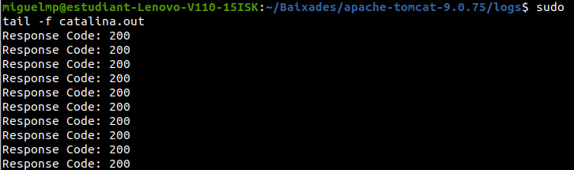

Say Big Numbers
Permite convertir números en su representación textual y realizar operaciones matemáticas con números grandes.
Configuración del entorno local
Para configurar el entorno local, sigue los siguientes pasos:
- Instala Apache Tomcat 9 siguiendo las instrucciones en https://tomcat.apache.org/download-90.cgi.
- Verifica que puedas iniciar Apache Tomcat localmente. Por defecto, se ejecuta en el puerto 8080. Puedes acceder a la página de administración en http://localhost:8080/manager/html.
Configuración de la webapp
- Descarga el proyecto
SayBigNumber.zip.
- Descomprime el archivo ZIP y ábrelo en IntelliJ o tu IDE preferido.
- En el proyecto, agrega la clase
NumbersCat y haz que implemente la interfaz Numbers.
- Agrega la clase
BigNumber al proyecto y haz que implemente la interfaz BigNumberOperator.
- Modifica la clase
SayBigNumberFactory para utilizar tus objetos implementados.
- Si tienes asignado un servidor en Es Liceu, el profesor te proporcionará un endpoint. Configura este endpoint en la clase
SayBigNumberFactory (por defecto, está configurado para apuntar a la instancia local).
Servicios de la webapp
La webapp ofrece los siguientes servicios:
Comprobación de los logs
La salida de la aplicación se encuentra en <TOMCAT_HOME>/logs/catalina.out. Puedes usar la herramienta tail para ver los logs en la pantalla:
<TOMCAT_HOME>/logs $ tail -f catalina.out

Diagramas
A continuación, se muestran los diagramas UML necesarios para comprender el funcionamiento del proyecto:
- Diagrama de comunicación
- Diagrama de casos de uso
- Diagrama de secuencia
- Diagrama de flujo
- Diagrama de clases
Pipeline
La construcción del proyecto debe seguir una pipeline que incluya las siguientes etapas:
- Build: Compilación del código fuente y generación del artefacto.
- Unit tests: Ejecución de pruebas unitarias para validar el comportamiento del código.
- SonarQube: Análisis estático del código para identificar posibles problemas y mejorar la calidad del código.

- Deploy: Asegúrate de que la práctica esté completa y que pase los tests en IntelliJ. Esto implica que has implementado todas las funcionalidades requeridas y que los tests unitarios asociados a la práctica se ejecutan correctamente en el entorno de desarrollo.
- Abre el archivo "saybinumbersfactory" en tu editor de código y realiza las modificaciones necesarias para que pueda obtener las prácticas relacionadas con big numbers y numbers cat.
- Descarga Apache Maven desde el sitio web oficial de Apache Maven https://maven.apache.org siguiendo las instrucciones correspondientes a tu sistema operativo. Esto generalmente implica descargar el archivo binario de Maven y descomprimirlo en una ubicación deseada en tu computadora.
- Configura las variables de entorno del sistema para que apunten al directorio de Maven descomprimido. Asegúrate de agregar la ruta al ejecutable de Maven (generalmente llamado "mvn") a la variable PATH. Esto permitirá que puedas ejecutar comandos de Maven desde cualquier ubicación en la línea de comandos.
- Una vez que hayas terminado de editar el código y Maven esté correctamente configurado, realiza el empaquetado del proyecto utilizando Maven:
- Abre una terminal o línea de comandos en el directorio raíz de tu proyecto, donde se encuentra el archivo "pom.xml".
- Ejecuta el comando
mvn package. Esto iniciará el proceso de empaquetado definido en el archivo "pom.xml".
- Maven compilará tu proyecto, ejecutará los tests, generará los archivos de distribución y construirá el archivo WAR para tu proyecto.
- Una vez que el comando se haya completado sin errores, encontrarás el archivo WAR en el directorio "target" de tu proyecto.
- Copia el archivo WAR generado y pégalo en la carpeta "webapps" del directorio de instalación de Apache Tomcat.
- Reinicia el servidor Tomcat para que cargue y despliegue tu aplicación. Una vez que Tomcat se haya reiniciado ya estará disponible.
- API tests: Ejecución de pruebas automatizadas para verificar el funcionamiento de los servicios de la webapp.

- E2E tests: Ejecución de pruebas de extremo a extremo para verificar la funcionalidad completa de la webapp. Como se puede ver hasta donde es capaz de llegar nuestro código en temas de funcionalidad.